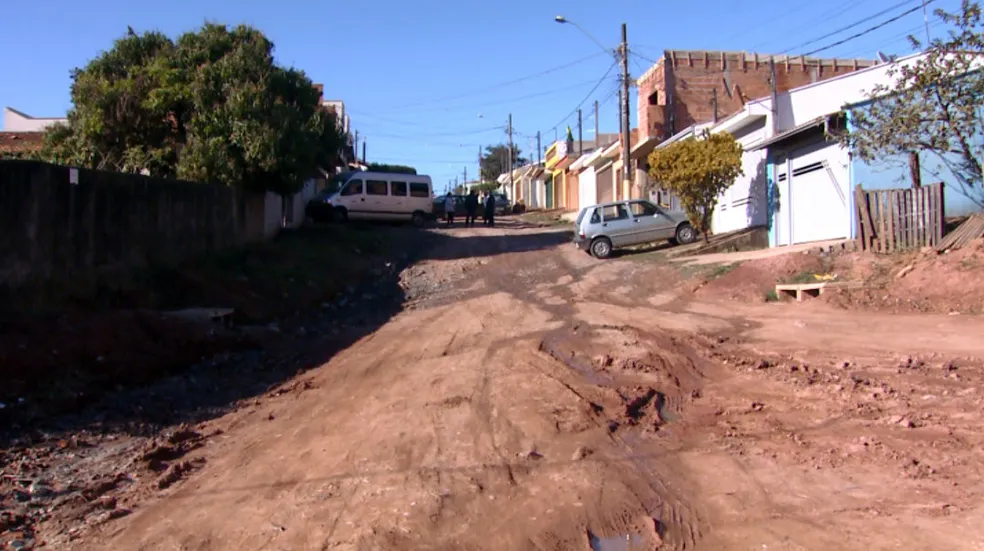

As fracas infra-estruturas nas zonas rurais são o resultado de uma combinação de factores históricos, econômicos, políticos e sociais. Historicamente, os governos têm priorizado as áreas urbanas, resultando em menos investimento no campo. O problema é agravado pelos recursos fiscais limitados devido à redução das receitas fiscais e à diminuição da base econômica. A baixa densidade populacional e os desafios geográficos aumentam os custos de implementação de infra-estruturas.
Além disso, a falta de representação política da população rural reduz ainda mais a necessidade de migração rural-urbana, reduzindo assim os incentivos ao investimento. A dependência de indústrias primárias com rendimentos mais baixos e a falta de tecnologia avançada limita o desenvolvimento de infra-estruturas. A educação e a formação técnica insuficientes, bem como a dependência inconsistente de subsídios governamentais, também contribuem para a instabilidade.
A superação destas barreiras requer políticas públicas que se concentrem na equidade regional, no investimento sustentado, em incentivos para atrair recursos e tecnologia e na colaboração entre o governo, o sector privado e as comunidades locais. Só assim será possível melhorar as infraestruturas rurais de forma sustentável, proporcionando melhores condições de vida e oportunidades econômicas.
As estradas de chão, comuns em áreas rurais, apresentam vários problemas significativos. Durante a chuva, essas estradas podem se tornar lamacentas e escorregadias, dificultando ou até impossibilitando o tráfego. Isso afeta negativamente o transporte de pessoas e mercadorias, aumentando o tempo de viagem e os custos de manutenção de veículos. Na seca, a poeira levantada pelo tráfego pode causar problemas respiratórios e reduzir a visibilidade, aumentando o risco de acidentes.
Além disso, a falta de pavimentação acelera a deterioração da estrada, exigindo manutenção constante que muitas comunidades rurais não conseguem realizar devido à falta de recursos. Essa situação contribui para o isolamento das áreas rurais, dificultando o acesso a serviços essenciais como saúde e educação, e limitando as oportunidades econômicas. Portanto, as estradas de chão deficientes são um obstáculo significativo para o desenvolvimento rural sustentável.